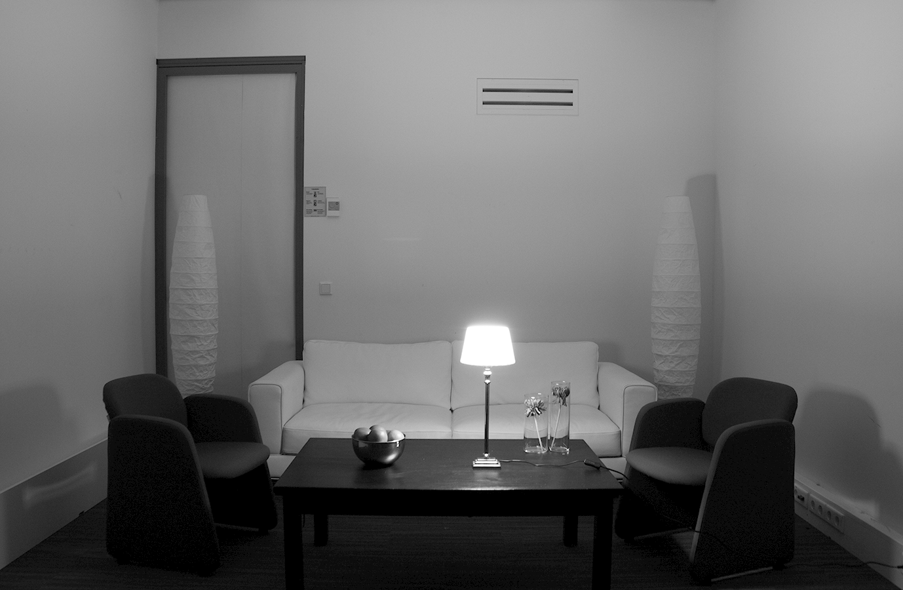
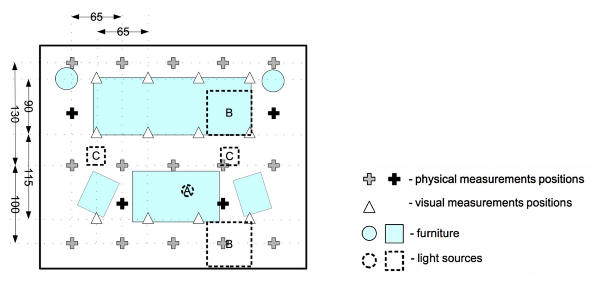

This room was measured for study by Kartashova, T., Sekulovksi, D., de Ridder, H., Pas, S. F., & Pont, S. C. (2016). The global structure of the visual light field and its relation to the physical light field. Journal of Vision, 16(9).
Note, that the measurements were done with diagonally oriented cube over not fully regular grid.
Front view of the measured room.
There is one light source in this room: lamp on the table in the center of the image.
Download file with mesurements of this scene.



Scene scheme. Blue rectangles and circles define furniture positions; gray crosses represent the physical measurement positions and black crosses show four additional measurement positions. Triangles represent the psychophysical measurement positions, and dashed shapes define the light sources positions: A - lamp on the table, B - diffused light sources in the ceiling, and C - directed light sources in the ceiling.